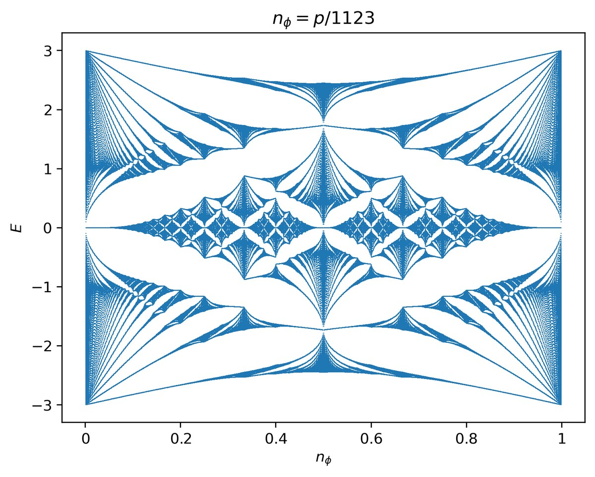
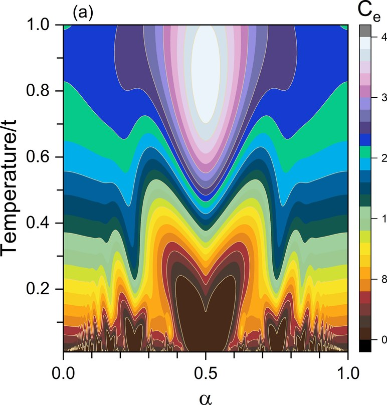
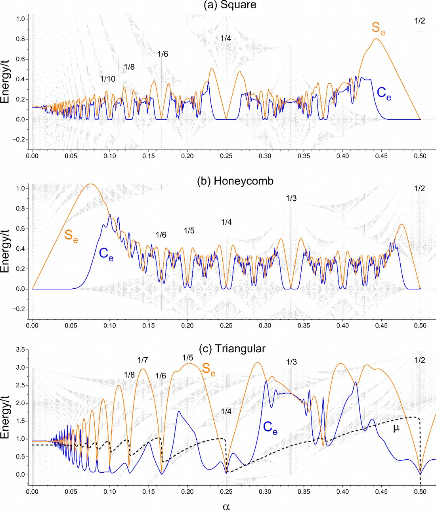
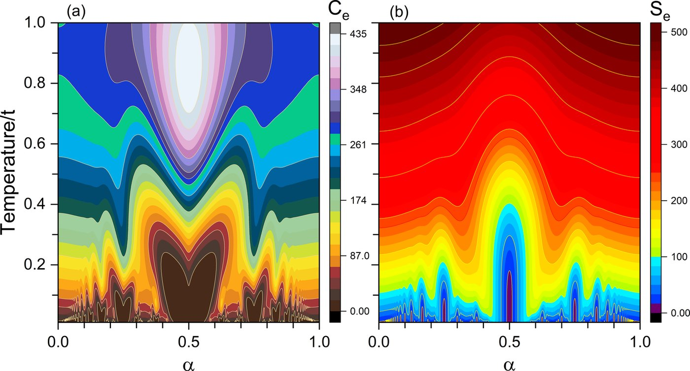

Thermal Hofstadter Butterflies
If you look closely at a romanesco — that green broccoli made of pointy cones — you will notice something odd: each little cone is made of smaller cones, and those of smaller ones still. Zoom into a part and you find a miniature copy of the whole. That is a fractal: a shape whose pattern repeats at different scales, where the detail never runs out no matter how close you get.Si te fijas bien en un romanesco —ese brócoli verde con forma de conos puntudos— vas a notar algo raro: cada conito está hecho de conitos más chicos, y esos de otros más chiquititos todavía. Le haces zoom a una parte y te encuentras con una copia en miniatura del todo. Eso es un fractal: una forma donde el patrón se repite a distintas escalas, y el detalle no se acaba nunca por más que te acerques.Wenn du einen Romanesco genau ansiehst — diesen grünen Brokkoli aus spitzen Kegeln —, fällt dir etwas Seltsames auf: Jeder Kegel besteht aus kleineren Kegeln, und diese wiederum aus noch kleineren. Zoomst du in einen Teil hinein, findest du eine Miniaturkopie des Ganzen. Das ist ein Fraktal: eine Form, deren Muster sich auf verschiedenen Skalen wiederholt und deren Detail nie endet, egal wie nah du herangehst.如果你仔细看一颗罗马花椰菜——那种由尖锥组成的绿色西兰花——会发现一件怪事：每个小锥体又由更小的锥体组成，而那些又由更小的组成。放大其中一部分，你会看到整体的微缩副本。这就是分形：一种图案在不同尺度上重复的形状，无论你靠得多近，细节都不会穷尽。
And it is not just a greengrocer thing. Fractals are everywhere. A tree 🌳 is a trunk that splits into branches, which split into smaller branches, ending in twigs: the same move repeated over and over. The coast of Chile seen from space is all jagged, and if you zoom into a bay you find smaller bays, and inside those, smaller ones still. Lightning ⚡ in a storm, rivers seen from a plane, even the blood vessels in your body: they all follow this recipe of "the whole resembles its parts".Y no es cosa de verdulería nomás. Los fractales están por todas partes. Un árbol 🌳 es un tronco que se parte en ramas, que se parten en ramas más chicas, que terminan en ramitas: la misma jugada repetida una y otra vez. La costa de Chile vista desde el espacio es toda quebrada, y si te acercas a una bahía encuentras bahías más chicas, y dentro de esas, otras aún más pequeñas. Los rayos ⚡ de una tormenta, los ríos vistos desde el avión, hasta los vasos sanguíneos de tu cuerpo: todos siguen esta receta de «el todo se parece a sus partes».Und das ist nicht nur eine Sache für den Gemüseladen. Fraktale sind überall. Ein Baum 🌳 ist ein Stamm, der sich in Äste teilt, die sich in kleinere Äste teilen und in Zweigen enden: derselbe Zug, immer wieder. Die Küste Chiles aus dem All ist ganz zerklüftet, und zoomt man in eine Bucht, findet man kleinere Buchten und darin noch kleinere. Blitze ⚡ im Gewitter, Flüsse aus dem Flugzeug, sogar die Blutgefäße in deinem Körper: Alle folgen diesem Rezept vom „Ganzen, das seinen Teilen gleicht".这可不只是菜市场里的事。分形无处不在。一棵树 🌳 是主干分出枝条，枝条又分出更小的枝条，最后成为细枝：同样的招式一再重复。从太空看智利的海岸线曲折破碎，而当你靠近一个海湾，会发现更小的海湾，其中还有更小的。风暴中的闪电 ⚡、从飞机上俯瞰的河流，甚至你体内的血管：都遵循着「整体与部分相似」这一配方。
The key idea is that: infinite detail, and a part that reproduces the whole. Keep that image, because in a moment we are going to meet a fractal far stranger and more astonishing than a broccoli. One that shows up in the quantum world, is shaped like a butterfly 🦋, and that this work managed to "see" in a new way: with heat.La idea clave es esa: detalle infinito, y una parte que reproduce el conjunto. Guárdate esta imagen, porque en un rato vamos a encontrarnos con un fractal mucho más raro y alucinante que un brócoli. Uno que aparece en el mundo cuántico, tiene forma de mariposa 🦋, y que este trabajo logró «ver» de una manera nueva: con calor.Die Kernidee ist genau das: unendliches Detail und ein Teil, der das Ganze wiedergibt. Merk dir dieses Bild, denn gleich begegnen wir einem Fraktal, das weit seltsamer und verblüffender ist als ein Brokkoli. Eines, das in der Quantenwelt auftaucht, die Form eines Schmetterlings 🦋 hat und das diese Arbeit auf neue Weise „sichtbar" machte: mit Wärme.关键就在于此：无穷的细节，以及能重现整体的局部。记住这个画面，因为待会儿我们要遇到一个比西兰花更奇特、更令人惊叹的分形。它出现在量子世界里，形状像一只蝴蝶 🦋，而这项工作用一种全新的方式「看见」了它：用热。
Now the good part. It turns out not every fractal is made of matter you can touch, like broccoli or a tree. There is one that appears in the behaviour of electrons, and it is one of the most beautiful and strangest objects in physics.Ahora viene lo bueno. Resulta que no todos los fractales están hechos de materia que puedes tocar, como el brócoli o un árbol. Hay uno que aparece en el comportamiento de los electrones, y es de los objetos más hermosos y extraños de la física.Jetzt kommt das Beste. Es stellt sich heraus, dass nicht jedes Fraktal aus anfassbarer Materie besteht wie Brokkoli oder ein Baum. Eines taucht im Verhalten der Elektronen auf, und es gehört zu den schönsten und seltsamsten Objekten der Physik.现在是精彩之处。原来并非所有分形都由你能触摸的物质构成，比如西兰花或树。有一个分形出现在电子的行为中，它是物理学中最美也最奇特的对象之一。
Picture a lattice of neatly ordered atoms, like the squares of a chessboard ♟️ or a beehive 🐝. Electrons hop around on it, like someone crossing a river stepping from stone to stone: they land on an atom, jump to the next, and so they travel the board. That is their natural rhythm, calm, square by square.Imagínate una red de átomos ordenaditos, como las casillas de un tablero de ajedrez ♟️ o un panal de abejas 🐝. Por ahí andan los electrones dando saltitos, como quien cruza un río pisando una piedra tras otra: pisan un átomo, saltan al siguiente, y así van recorriendo el tablero. Ese es su ritmo natural, tranquilo, casilla por casilla.Stell dir ein Gitter ordentlich angeordneter Atome vor, wie die Felder eines Schachbretts ♟️ oder eine Bienenwabe 🐝. Darauf hüpfen Elektronen herum, wie jemand, der einen Fluss von Stein zu Stein überquert: Sie landen auf einem Atom, springen zum nächsten und durchqueren so das Brett. Das ist ihr natürlicher Rhythmus, ruhig, Feld für Feld.想象一个原子整齐排列的晶格，像棋盘 ♟️ 的方格或蜂巢 🐝。电子在上面跳来跳去，就像有人踩着石头过河：落在一个原子上，跳到下一个，就这样走遍棋盘。这是它们自然的节奏，从容，一格一格。
Now bring a powerful magnet 🧲 close, like when you stick a magnet to the fridge and feel the tug before it touches. That magnetic field butts in: instead of letting the electrons go straight, it pushes them to turn, to want to go in circles, like when you are in a car 🚗 and a roundabout throws you outward. So now the electron has two bosses giving different orders: the lattice says "hop from stone to stone, straight ahead", and the magnet says "no, turn, go in a circle". And here is the fight: which one does it obey?Ahora acércale un imán 🧲 bien potente, como cuando pegas un imán al refri y sientes el tirón antes de que toque. Ese campo magnético mete su cuchara: en vez de dejar que los electrones sigan derechito, los empuja a torcer, a querer dar vueltas en círculo, como cuando vas en auto 🚗 y en una rotonda la fuerza te tira hacia afuera de la curva. Así que ahora el electrón tiene dos jefes dándole órdenes distintas: la red le dice «salta de piedra en piedra, derecho», y el imán le dice «no, dobla, gira en círculo». Y acá está la pelea: ¿a cuál le hace caso?Nun bring einen kräftigen Magneten 🧲 in die Nähe, wie wenn du einen Magneten an den Kühlschrank hältst und den Zug spürst, bevor er berührt. Dieses Magnetfeld mischt sich ein: Statt die Elektronen geradeaus laufen zu lassen, drängt es sie, abzubiegen, sich im Kreis zu drehen — wie im Auto 🚗, wenn dich der Kreisverkehr nach außen zieht. Jetzt hat das Elektron zwei Chefs mit verschiedenen Befehlen: Das Gitter sagt „spring von Stein zu Stein, geradeaus", der Magnet sagt „nein, dreh dich im Kreis". Und hier ist der Streit: Wem gehorcht es?现在把一块强力磁铁 🧲 靠近，就像你把磁铁贴到冰箱上、在触到之前就感到那股拉力。这个磁场横插一脚：它不让电子径直前进，而是推着它们转弯、想要绕圈，就像你坐在车 🚗 里、环岛把你甩向外侧。于是电子有了两个下达不同命令的老板：晶格说「踩着石头往前跳」，磁铁说「不，拐弯，绕圈走」。矛盾就在这里：它该听谁的？
And the answer is: it depends on how the two rhythms fit together. Sometimes the lattice's step and the turn the magnet imposes match exactly, neatly, like two songs 🎵 in the same time signature that sound good together. Then things are calm. But sometimes the two rhythms have nothing to do with each other, each going its own way, like someone clapping off-beat at a concert and everything falls apart. And right there, when the rhythms do not fit, the magic happens.Y la respuesta es: depende de cómo calcen los dos ritmos. A veces el paso de la red y el giro que impone el imán encajan justito, redondo, como dos canciones 🎵 que van al mismo compás y suenan bien juntas. Ahí la cosa es tranquila. Pero a veces los dos ritmos no tienen nada que ver, van cada uno por su lado, como cuando alguien aplaude fuera de tiempo en un concierto y todo se desarma. Y justo ahí, cuando los ritmos no calzan, pasa la magia.Und die Antwort lautet: Es hängt davon ab, wie die beiden Rhythmen zusammenpassen. Manchmal fügen sich der Schritt des Gitters und die vom Magneten erzwungene Drehung genau ineinander, rund, wie zwei Lieder 🎵 im selben Takt, die gut zusammenklingen. Dann ist alles ruhig. Manchmal aber haben die beiden Rhythmen nichts miteinander zu tun, jeder geht seinen Weg — wie wenn jemand bei einem Konzert aus dem Takt klatscht und alles auseinanderfällt. Und genau dann, wenn die Rhythmen nicht passen, geschieht das Wunder.答案是：取决于两种节奏如何契合。有时晶格的步伐与磁铁强加的旋转恰好合拍、严丝合缝，就像两首同拍子的歌 🎵 合在一起很好听。这时一切平静。但有时两种节奏毫不相干，各走各的，就像有人在音乐会上打错拍子，一切都乱了套。而恰恰在节奏不合的时候，奇迹发生了。
In those cases, the energies the electrons are allowed to have split into pieces, and each piece splits again, and again, and again. If you plot all those energies on a graph, the figure that appears is shaped like a butterfly 🦋: big wings that contain smaller wings inside, which contain smaller wings still. A fractal, just like the broccoli at the start, but made of pure quantum energy instead of vegetable.En esos casos, las energías que los electrones tienen permitido tener se parten en pedazos, y cada pedazo se vuelve a partir, y otra vez, y otra. Si dibujas todas esas energías en un gráfico, la figura que aparece tiene forma de mariposa 🦋: alas grandes que por dentro tienen alas más chicas, que por dentro tienen alas más chicas todavía. Un fractal, igualito que el brócoli del principio, pero hecho de pura energía cuántica en vez de verdura.In diesen Fällen zerfallen die Energien, die die Elektronen haben dürfen, in Stücke, und jedes Stück zerfällt wieder, und wieder, und wieder. Trägt man all diese Energien in ein Diagramm ein, hat die Figur die Form eines Schmetterlings 🦋: große Flügel, die kleinere Flügel enthalten, die wiederum noch kleinere enthalten. Ein Fraktal, genau wie der Brokkoli am Anfang, nur aus reiner Quantenenergie statt aus Gemüse.在这些情形下，电子被允许拥有的能量裂成碎片，每一片又再裂开，一次又一次。若把所有这些能量画成图，出现的图形形如一只蝴蝶 🦋：大翅膀里藏着小翅膀，小翅膀里又藏着更小的翅膀。一个分形，就像开头的西兰花，只不过由纯粹的量子能量而非蔬菜构成。

It is called the Hofstadter butterfly, after Douglas Hofstadter, who predicted it in 1976 doing calculations with a pencil ✏️, paper and one of those old computers the size of a room. And stop a second to consider how remarkable that is: that a person, through calculations done almost by hand, was able to imagine and draw the shape of this infinitely detailed butterfly long before the technology existed to see it. It is as if someone described to you in exquisite detail an animal nobody had ever seen, and which was only found four decades later: exactly as they had drawn it. Because that is precisely what happened: the butterfly was only a prediction on paper until, in the last decade, they finally managed to catch it in an experiment — no easy feat, it took very special materials and brutal magnetic fields. And there it was confirmed that it really existed, it was not just pretty mathematics.Se llama la mariposa de Hofstadter, por Douglas Hofstadter, que la predijo en 1976 haciendo cuentas con lápiz ✏️, papel y un computador de esos antiguos del porte de una pieza. Y párate un segundo a pensar en lo notable que es eso: que una persona, a punta de cálculos hechos casi a mano, haya sido capaz de imaginar y dibujar la forma de esta mariposa infinitamente detallada, mucho antes de que existiera la tecnología para verla. Es como si alguien te describiera con lujo de detalle un animal que nadie había visto jamás, y que solo pudieron encontrar cuatro décadas después: tal cual lo había dibujado. Porque eso fue justo lo que pasó: la mariposa fue solo una predicción en un papel hasta que en la última década por fin lograron atraparla en un experimento —cosa nada fácil, hacían falta materiales muy especiales y campos magnéticos brutales—. Y ahí quedó confirmado que existía en serio, no era solo matemática bonita.Er heißt Hofstadter-Schmetterling, nach Douglas Hofstadter, der ihn 1976 mit Bleistift ✏️, Papier und einem jener alten zimmergroßen Computer vorhersagte. Halte einen Moment inne und überlege, wie bemerkenswert das ist: dass ein Mensch mit fast von Hand ausgeführten Rechnungen die Form dieses unendlich detaillierten Schmetterlings erdenken und zeichnen konnte, lange bevor es die Technik gab, ihn zu sehen. Als hätte dir jemand in aller Ausführlichkeit ein Tier beschrieben, das nie jemand gesehen hatte und das man erst vier Jahrzehnte später fand: genau so, wie er es gezeichnet hatte. Denn genau das geschah: Der Schmetterling war nur eine Vorhersage auf Papier, bis man ihn im letzten Jahrzehnt endlich im Experiment einfing — keine leichte Sache, es brauchte sehr spezielle Materialien und brutale Magnetfelder. Und damit war bestätigt, dass er wirklich existiert und nicht bloß schöne Mathematik war.它叫霍夫施塔特蝴蝶，得名于道格拉斯·霍夫施塔特，他在 1976 年用铅笔 ✏️、纸和一台房间那么大的老式计算机预言了它。请停一秒想想这有多了不起：一个人凭借近乎手算的计算，竟能在技术尚不足以观测之前，想象并画出这只无限精细的蝴蝶。这就像有人向你详尽描述了一种从未有人见过的动物，而四十年后人们才找到它：与他所画的一模一样。因为事情正是如此：这只蝴蝶一直只是纸上的预言，直到最近十年人们才终于在实验中捕获它——这绝非易事，需要非常特殊的材料和极强的磁场。至此确认它真实存在，而不只是漂亮的数学。
Everything I have told you so far was already known. The butterfly exists, it is a fractal, they managed to see it. What is new in this work is looking at it in a way nobody had seriously explored: with heat. Until now it had always been "watched" the same way, by looking at electrical things ⚡, at how current flows through the material.Hasta acá, todo lo que te conté ya se sabía. La mariposa existe, es un fractal, la lograron ver. Pero siempre la habían «mirado» de la misma manera: fijándose en cosas eléctricas ⚡, en cómo la corriente pasa por el material. Lo que hace nuevo este trabajo es mirarla de una forma que a nadie se le había ocurrido explorar en serio: con calor.Alles, was ich dir bisher erzählt habe, war bereits bekannt. Der Schmetterling existiert, er ist ein Fraktal, man konnte ihn sehen. Neu an dieser Arbeit ist, ihn auf eine Weise zu betrachten, die niemand ernsthaft erkundet hatte: mit Wärme. Bisher hatte man ihn immer gleich „angeschaut": über elektrische Größen ⚡, über den Stromfluss durch das Material.到目前为止我讲的都是已知的。蝴蝶存在，它是分形，人们看到了它。这项工作的新意在于用一种没人认真探索过的方式去看它：用热。此前人们总是以同样的方式「观看」它：盯着电学量 ⚡，看电流如何流过材料。
The idea is to ask how the material reacts when you heat it a little. And there are two things they look at. One is how much energy you need to raise its temperature just a bit — physicists call it specific heat, but think of it as "how hard is it to heat this thing". A swimming pool 🏊 costs a fortune to heat; a cup of water ☕, nothing. The other is how much the energy is spread out or diluted inside — what physicists call entropy: whether all the energy is tightly packed and orderly in a few places, or scattered across many different parts of the material.La idea es preguntarse cómo reacciona el material cuando lo calientas un poquito. Y hay dos cosas que miran. Una es cuánta energía necesitas para subirle apenas la temperatura —los físicos le dicen calor específico, pero piénsalo como «qué tan difícil es calentar esto»—. Una piscina 🏊 cuesta un mundo calentarla; una taza de agua ☕, nada. La otra es qué tanto se le reparte o se le diluye la energía por dentro —lo que los físicos llaman entropía—: si toda la energía está bien juntita y ordenada en pocos lugares, o si está desparramada en muchas partes distintas del material.Die Idee ist zu fragen, wie das Material reagiert, wenn man es ein wenig erwärmt. Und man schaut auf zwei Dinge. Erstens, wie viel Energie man braucht, um die Temperatur nur leicht anzuheben — Physiker nennen das spezifische Wärme, aber denk daran als „wie schwer ist es, das hier aufzuheizen". Ein Schwimmbad 🏊 zu erwärmen kostet ein Vermögen; eine Tasse Wasser ☕ gar nichts. Zweitens, wie stark die Energie im Inneren verteilt oder verdünnt ist — was Physiker Entropie nennen: ob die ganze Energie eng gepackt und geordnet an wenigen Stellen sitzt oder über viele verschiedene Teile des Materials verstreut ist.思路是问：当你稍微加热材料时它如何反应。他们看两样东西。一是要把温度提高一点点需要多少能量——物理学家称之为比热，但你可以理解为「加热这东西有多难」。一个游泳池 🏊 要加热得花大力气；一杯水 ☕ 则不费吹灰之力。二是能量在内部有多分散或稀释——物理学家称之为熵：所有能量是紧凑有序地集中在少数地方，还是散布在材料的许多不同部分。
And here comes the pretty part: when they plot how hard it is to heat the material, for different values of the magnet and the temperature, hearts ❤️ appear. Real hearts, with that shape. There is a big one, clearly marked, and around it smaller hearts emerge, replicas of the big one at smaller size — just like the butterfly's wings inside other wings, just like the broccoli. The fractal reappears, but now drawn with heat.Y acá viene lo bonito: cuando dibujan qué tan difícil es calentar el material, para distintos valores del imán y la temperatura, aparecen corazones ❤️. Corazones de verdad, con esa forma. Hay uno grande, bien marcado, y alrededor van saliendo corazones más chicos, réplicas del grande a menor tamaño —igual que las alas de la mariposa dentro de otras alas, igual que el brócoli—. El fractal reaparece, pero ahora dibujado con calor.Und jetzt das Schöne: Trägt man auf, wie schwer sich das Material erwärmen lässt, für verschiedene Werte von Magnetfeld und Temperatur, erscheinen Herzen ❤️. Echte Herzen, mit dieser Form. Es gibt ein großes, deutlich ausgeprägtes, und ringsum tauchen kleinere Herzen auf, Repliken des großen in kleinerem Maßstab — genau wie die Schmetterlingsflügel in anderen Flügeln, genau wie der Brokkoli. Das Fraktal erscheint wieder, nun aber mit Wärme gezeichnet.精彩之处来了：当他们针对不同的磁场与温度值，画出「加热这材料有多难」时，出现了心形 ❤️。真正的心形，就是那个形状。有一个大的、轮廓分明的，周围又浮现出更小的心形，是大心形的缩小复制品——就像蝴蝶翅膀里的翅膀，就像西兰花。分形再度出现，但这次是用热画出来的。

And what does each heart mean? Inside a heart, the material struggles enormously to react to heat: you pour energy in and almost nothing happens. That is because right there the electrons have a "gap" — there are no states nearby they can jump to, so they stay put, like a staircase missing several steps: however much you want to climb, there is nowhere to put your foot. That gap is one of the fine parts of the fractal, and the heart is giving it away.¿Y qué significa cada corazón? Adentro de un corazón, al material le cuesta muchísimo reaccionar al calor: le metes energía y casi no pasa nada. Eso ocurre porque justo ahí los electrones tienen un «hueco» —no hay estados a los que puedan saltar cerca, así que se quedan quietos, como en una escalera a la que le faltan varios peldaños: por más que quieras subir, no tienes dónde pisar—. Ese hueco es una de las partes finas del fractal, y el corazón lo está delatando.Und was bedeutet jedes Herz? Im Inneren eines Herzens reagiert das Material kaum auf Wärme: Du führst Energie zu und es passiert fast nichts. Das liegt daran, dass die Elektronen genau dort eine „Lücke" haben — es gibt keine nahen Zustände, in die sie springen könnten, also bleiben sie sitzen, wie bei einer Treppe, der mehrere Stufen fehlen: Du willst hinauf, hast aber nichts, worauf du treten könntest. Diese Lücke ist einer der feinen Teile des Fraktals, und das Herz verrät sie.每个心形意味着什么？在心形内部，材料极难对热做出反应：你输入能量，却几乎什么都没发生。这是因为电子在那里存在一个「能隙」——附近没有可供跃迁的态，于是它们原地不动，就像一段缺了好几级的楼梯：你想上去，却无处落脚。这个能隙正是分形的精细部分之一，而心形把它暴露了出来。
At the same time, the disorder draws tunnels: deep, sunken valleys, in exactly those same places. Where there is a heart of "hard to heat", there is a tunnel where the energy is barely spread out, tightly packed. They are two sides of the same coin, pointing to the same spot on the butterfly.Al mismo tiempo, el desorden dibuja túneles: valles profundos, hundidos, justo en esos mismos lugares. Donde hay un corazón de «cuesta calentar», hay un túnel donde la energía está poco repartida, bien juntita. Son las dos caras de la misma moneda, apuntando al mismo sitio de la mariposa.Zugleich zeichnet die Unordnung Tunnel: tiefe, eingesunkene Täler, genau an denselben Stellen. Wo ein Herz des „schwer zu Erwärmenden" liegt, gibt es einen Tunnel, in dem die Energie kaum verteilt und eng gepackt ist. Zwei Seiten derselben Medaille, die auf dieselbe Stelle des Schmetterlings zeigen.与此同时，无序度画出了隧道：深陷的低谷，恰好在同样的位置。凡有「难以加热」的心形处，就有一条能量几乎不分散、紧密聚集的隧道。这是同一枚硬币的两面，指向蝴蝶上的同一处。
The fun part is where these hearts and tunnels appear: not just anywhere, but at very precise values of the magnet — when the field's rhythm fits in simple proportions, like a half, a quarter, a sixth. Those points are the butterfly's "spines", its skeleton. So by hunting for hearts and tunnels you can map out the fractal's skeleton without having to look at the energies directly. Heat works as a magnifying glass 🔍 to see a structure that would otherwise be much harder to trace.Lo entretenido es dónde aparecen estos corazones y túneles: no en cualquier parte, sino en puntos muy precisos del imán —cuando el ritmo del campo calza en proporciones simples, como la mitad, un cuarto, un sexto—. Esos puntos son las «espinas» de la mariposa, su esqueleto. Así que buscando corazones y túneles puedes ir marcando el esqueleto del fractal sin tener que mirar las energías directamente. El calor funciona como una lupa 🔍 para ver una estructura que, de otra forma, sería mucho más difícil de rastrear.Das Unterhaltsame ist, wo diese Herzen und Tunnel auftauchen: nicht irgendwo, sondern an sehr genauen Werten des Magnetfelds — wenn der Rhythmus des Feldes in einfachen Verhältnissen aufgeht, wie einem Halb, einem Viertel, einem Sechstel. Diese Punkte sind die „Rückgrate" des Schmetterlings, sein Skelett. Durch die Suche nach Herzen und Tunneln lässt sich also das Skelett des Fraktals kartieren, ohne die Energien direkt betrachten zu müssen. Die Wärme wirkt als Lupe 🔍 für eine Struktur, die sonst viel schwerer aufzuspüren wäre.有趣的是这些心形与隧道出现的位置：并非随处可见，而是在磁场非常精确的取值上——当磁场的节奏落在简单的比例上，如二分之一、四分之一、六分之一。这些点正是蝴蝶的「脊柱」，它的骨架。因此，通过寻找心形与隧道，你可以标出分形的骨架，而无需直接观察能量。热就像一面放大镜 🔍，让原本难以追踪的结构显现出来。
There is something else that comes almost for free out of all this, and it is entertaining. We already saw that moving the magnet changes how spread out the energy is inside the material. Well, it turns out that same thing can be used to cool or heat it. This trick is called the magnetocaloric effect — the name sounds grand, but it only means that: you produce temperature changes ("caloric") using magnets ("magneto"). And it is not science fiction: it is exactly the principle behind some of the most advanced refrigerators 🧊 in existence today.Hay algo más que sale casi gratis de todo esto, y es entretenido. Ya vimos que mover el imán cambia qué tan repartida está la energía dentro del material. Bueno, resulta que eso mismo se puede usar para enfriar o calentar la cosa. A este truco se le llama efecto magnetocalórico —el nombre suena rimbombante, pero solo quiere decir eso: que generas cambios de temperatura («calórico») usando magnetos, o sea imanes («magneto»)—. Y no es ciencia ficción: es exactamente el principio con el que funcionan algunos de los refrigeradores 🧊 más avanzados que existen hoy.Aus alldem ergibt sich noch etwas fast geschenkt, und es ist unterhaltsam. Wir sahen bereits, dass das Bewegen des Magneten ändert, wie verteilt die Energie im Material ist. Nun, genau das lässt sich zum Kühlen oder Heizen nutzen. Dieser Trick heißt magnetokalorischer Effekt — der Name klingt großspurig, meint aber nur das: Man erzeugt Temperaturänderungen („kalorisch") mithilfe von Magneten („magneto"). Und das ist keine Science-Fiction: Es ist genau das Prinzip einiger der fortschrittlichsten Kühlschränke 🧊, die es heute gibt.从这一切中还几乎免费地得到了另一样东西，而且很有意思。我们已经看到，移动磁铁会改变材料内部能量的分散程度。而这本身就可以用来制冷或加热。这个把戏叫作磁热效应——名字听着唬人，其实只是说：用磁体（magneto）产生温度变化（caloric）。这并非科幻：它正是当今某些最先进冰箱 🧊 的工作原理。
The idea, simply: if you bring the magnet closer or move it away in just the right way, you force the material's energy to rearrange. And when the energy rearranges, the material has to release or absorb heat to compensate — just like when you press a spray can and the can cools by itself, or when you pump up a bicycle 🚲 and the pump heats up. Something similar happens here, but by moving a magnetic field instead of squeezing gas.La idea, en simple: si acercas o alejas el imán de la manera justa, obligas a la energía del material a reordenarse. Y cuando la energía se reordena, el material tiene que soltar o absorber calor para compensar —igual que cuando aprietas un desodorante en spray y la lata se enfría sola, o cuando bombeas una bicicleta 🚲 y la bomba se calienta—. Acá pasa parecido, pero moviendo un campo magnético en lugar de apretar gas.Die Idee, einfach gesagt: Bringst du den Magneten auf die richtige Weise näher oder entfernst ihn, zwingst du die Energie des Materials, sich neu zu ordnen. Und wenn sich die Energie neu ordnet, muss das Material Wärme abgeben oder aufnehmen, um das auszugleichen — genau wie eine Sprühdose, die von selbst kalt wird, wenn du sie drückst, oder wie eine Fahrradpumpe 🚲, die sich beim Pumpen erwärmt. Hier passiert Ähnliches, nur bewegt man ein Magnetfeld, statt Gas zu pressen.简单说：如果你以恰当的方式让磁铁靠近或远离，就迫使材料中的能量重新排布。而当能量重新排布时，材料必须释放或吸收热量来补偿——就像你按下喷雾罐时罐体自行变冷，或给自行车 🚲 打气时气筒发热。这里的情形类似，只不过是移动磁场而非压缩气体。
The nice thing is that in this butterfly the effect is especially strong precisely at the fractal's "spines" — those points where the magnet fits in simple proportions, like a half. There, a tiny change in the field gets you a big change in temperature. In other words, the very same place where the hearts and tunnels appeared is where the material becomes a better refrigerator. Everything points to the same butterfly skeleton.Lo bonito es que, en esta mariposa, el efecto es especialmente fuerte justo en las «espinas» del fractal —esos puntos donde el imán calza en proporciones simples, como la mitad—. Ahí, con un cambio chiquitito del campo consigues un cambio grande de temperatura. O sea, el mismo lugar donde aparecían los corazones y los túneles es donde el material se vuelve un mejor refrigerador. Todo apunta al mismo esqueleto de la mariposa.Das Schöne ist, dass der Effekt bei diesem Schmetterling gerade an den „Rückgraten" des Fraktals besonders stark ist — jenen Punkten, an denen der Magnet in einfachen Verhältnissen aufgeht, etwa einem Halb. Dort erzielt eine winzige Feldänderung eine große Temperaturänderung. Anders gesagt: Genau dort, wo die Herzen und Tunnel auftauchten, wird das Material zum besseren Kühlschrank. Alles weist auf dasselbe Schmetterlingsskelett.妙处在于，在这只蝴蝶上，效应恰恰在分形的「脊柱」处特别强——就是磁场落在简单比例（如二分之一）的那些点。在那里，磁场的微小变化就能带来温度的大幅改变。也就是说，出现心形与隧道的同一处，正是材料成为更好制冷机的地方。一切都指向同一副蝴蝶骨架。
And is this just blackboard theory? Not entirely. We estimate that with graphene-type materials and strong but achievable magnetic fields in a real laboratory, the effect could give coolings of a few degrees. You will not be putting this in your kitchen tomorrow, but it is something that could, in principle, be measured — and the fractality could be exploited to cool tomorrow's quantum devices.¿Y esto es solo teoría de pizarrón? No del todo. Nosotros estimamos que, con materiales tipo grafeno y campos magnéticos fuertes pero alcanzables en un laboratorio de verdad, el efecto podría dar enfriamientos de unos pocos grados. No es que vayas a meter esto en tu cocina mañana, pero sí es algo que, en principio, se podría medir —y aprovechar la fractalidad para enfriar los dispositivos cuánticos del mañana—.Und ist das bloß Tafeltheorie? Nicht ganz. Wir schätzen, dass der Effekt mit Materialien vom Graphen-Typ und starken, aber in einem echten Labor erreichbaren Magnetfeldern Abkühlungen von einigen Grad liefern könnte. Du wirst das morgen nicht in deine Küche stellen, aber es ließe sich im Prinzip messen — und die Fraktalität nutzen, um die Quantengeräte von morgen zu kühlen.这只是黑板上的理论吗？并不全是。我们估计，采用石墨烯类材料以及在真实实验室中可实现的强磁场，该效应可带来几度的降温。你明天不会把它搬进厨房，但原则上它是可以被测量的——并且可以利用分形性来冷却未来的量子器件。
One detail I had not told you: none of this happens for a single way of arranging the atoms. The authors tested it on three different lattices — a chessboard type ♟️ (square), a beehive type 🐝 and a triangular one 🔺. And the nice thing is that all three behave similarly, each drawing its hearts and its tunnels, but each with its own flavour: the beehive and the chessboard come out nicely symmetric and tidy, while the triangular one is more capricious, with slightly deformed hearts. It is like hearing the same song 🎵 played by three different musicians: you recognise the melody, but each one adds their own touch.Un detalle que no te había contado: nada de esto pasa en una sola forma de ordenar los átomos. Los autores lo probaron en tres redes distintas —una tipo tablero de ajedrez ♟️ (cuadrada), una tipo panal de abejas 🐝 y una de triángulos 🔺—. Y lo bonito es que las tres se portan parecido, cada una dibuja sus corazones y sus túneles, pero cada una con su propio sabor: la del panal y la del tablero salen bien simétricas, ordenaditas, mientras que la de triángulos sale más caprichosa, con los corazones un poco deformados. Es como escuchar la misma canción 🎵 tocada por tres músicos distintos: reconoces la melodía, pero cada uno le pone lo suyo.Ein Detail, das ich dir noch nicht erzählt hatte: Nichts davon geschieht nur bei einer einzigen Anordnung der Atome. Die Autoren prüften es an drei verschiedenen Gittern — einem Schachbrett-Typ ♟️ (quadratisch), einem Bienenwaben-Typ 🐝 und einem dreieckigen 🔺. Und das Schöne ist, dass sich alle drei ähnlich verhalten, jedes zeichnet seine Herzen und Tunnel, aber jedes mit eigenem Charakter: Wabe und Schachbrett kommen schön symmetrisch und ordentlich heraus, während das Dreiecksgitter eigenwilliger ausfällt, mit leicht verformten Herzen. Es ist, als hörte man dasselbe Lied 🎵 von drei verschiedenen Musikern gespielt: Man erkennt die Melodie, aber jeder gibt ihr seine Note.有个细节我还没告诉你：这一切并非只发生在一种原子排列方式上。作者在三种不同晶格上做了检验——棋盘型 ♟️（方格）、蜂巢型 🐝 和三角形 🔺。妙的是三者表现相似，各自画出自己的心形与隧道，但各有风味：蜂巢与棋盘的结果对称而齐整，三角晶格则更任性，心形略有变形。这就像听三位不同乐手演奏同一首歌 🎵：你认得出旋律，但每人都加了自己的味道。
And there is the big idea. Until now, to glimpse a quantum fractal like this one you had to look at electrical quantities, which are not always easy to measure with the required finesse. What this work shows is that the material's heat and disorder also have the butterfly written into them — and in some cases give it away in even more detail. It is a new magnifying glass 🔍 for looking at something old and hard to see.Y ahí está la idea grande. Hasta ahora, para asomarse a un fractal cuántico como este había que mirar cosas eléctricas, que no siempre son fáciles de medir con la finura necesaria. Lo que muestra este trabajo es que el calor y el desorden del material también llevan escrita la mariposa —y en algunos casos la delatan con más detalle todavía—. Es una lupa 🔍 nueva para mirar algo viejo y difícil de ver.Und darin liegt die große Idee. Bisher musste man, um einen Quantenfraktal wie diesen zu erhaschen, elektrische Größen betrachten, die sich nicht immer mit der nötigen Feinheit messen lassen. Diese Arbeit zeigt, dass auch Wärme und Unordnung des Materials den Schmetterling in sich tragen — und ihn in manchen Fällen sogar noch detaillierter verraten. Eine neue Lupe 🔍 für etwas Altes und schwer Sichtbares.这就是核心思想。迄今为止，要窥见这样的量子分形，必须观察电学量，而它们并不总能以所需的精细度测得。这项工作表明，材料的热与无序同样刻写着这只蝴蝶——在某些情形下甚至暴露得更为细致。这是观察一个古老而难见之物的新放大镜 🔍。
With materials that do exist today — graphene and some organic structures with nice big lattices, exactly what is needed to make the experiment reachable — this stops being a drawing on paper and becomes something that could be measured in a laboratory.Con materiales que hoy sí existen —grafeno y unas estructuras orgánicas que tienen redes bien grandotas, justo lo que hace falta para que el experimento sea alcanzable—, esto deja de ser un dibujo en un papel y se vuelve algo que se podría medir en un laboratorio.Mit Materialien, die es heute tatsächlich gibt — Graphen und organische Strukturen mit schön großen Gittern, genau das, was den Versuch erreichbar macht —, ist das keine Zeichnung auf Papier mehr, sondern etwas, das sich im Labor messen ließe.借助今天确实存在的材料——石墨烯以及一些具有相当大晶格的有机结构，正是让实验变得可行所需要的——这便不再是纸上的图画，而成为可以在实验室中测量的东西。
So next time you see a romanesco broccoli 🥦, remember: that same mathematics of "the whole repeated in its parts" is also hidden in the electrons of a material, waiting to be heated up a little to come to light. And when it does, it will appear in the shape of a heart ❤️.Así que la próxima vez que veas un brócoli 🥦 romanesco, acuérdate: esa misma matemática de «el todo repetido en sus partes» está también escondida en los electrones de un material, esperando que la calienten un poquito para salir a la luz. Y cuando lo haga, va a aparecer con forma de corazón ❤️.Wenn du also das nächste Mal einen Romanesco-Brokkoli 🥦 siehst, denk daran: Dieselbe Mathematik vom „Ganzen, das sich in seinen Teilen wiederholt", steckt auch in den Elektronen eines Materials und wartet darauf, ein wenig erwärmt zu werden, um ans Licht zu kommen. Und wenn sie das tut, erscheint sie in Herzform ❤️.所以下次你看到罗马花椰菜 🥦 时，请记得：同样这套「整体在部分中重复」的数学，也藏在材料的电子里，等着被稍微加热一下就会显现。而当它显现时，会以心形 ❤️ 出现。
On a 2D lattice under a perpendicular magnetic field, two length scales compete: the lattice spacing and the magnetic length. What matters is their ratio, packaged as α — the magnetic flux threading one unit cell, measured in flux quanta. When α is a simple rational number the two scales are commensurate and the band splits into q subbands; when it is irrational the splitting never stops. Plot the allowed energies against α and you get the Hofstadter butterfly: a genuinely fractal spectrum, self-similar all the way down.En una red 2D bajo campo magnético perpendicular compiten dos escalas de longitud: el parámetro de red y la longitud magnética. Lo que importa es su razón, empaquetada en α —el flujo magnético que atraviesa una celda unitaria, medido en cuantos de flujo—. Cuando α es un racional simple las dos escalas son conmensurables y la banda se parte en q subbandas; cuando es irracional el desdoblamiento no se detiene nunca. Grafica las energías permitidas contra α y obtienes la mariposa de Hofstadter: un espectro genuinamente fractal, autosimilar hasta el fondo.In einem 2D-Gitter unter senkrechtem Magnetfeld konkurrieren zwei Längenskalen: die Gitterkonstante und die magnetische Länge. Entscheidend ist ihr Verhältnis, gebündelt in α — dem magnetischen Fluss durch eine Einheitszelle, gemessen in Flussquanten. Ist α eine einfache rationale Zahl, sind beide Skalen kommensurabel und das Band spaltet in q Teilbänder; ist sie irrational, hört die Aufspaltung nie auf. Trägt man die erlaubten Energien gegen α auf, erhält man den Hofstadter-Schmetterling: ein echt fraktales, bis nach unten selbstähnliches Spektrum.在垂直磁场下的二维晶格中，两个长度尺度相互竞争：晶格常数与磁长度。重要的是它们的比值，浓缩为 α——穿过一个原胞的磁通，以磁通量子为单位。当 α 是简单有理数时，两个尺度可公度，能带分裂为 q 个子带；当它是无理数时，分裂永不停止。把允许的能量对 α 作图，就得到霍夫施塔特蝴蝶：一个真正的分形谱，自相似直到最底层。
Everything known about this butterfly came from looking at it through transport: Hall conductance, the fractal quantum Hall effect in moiré superlattices, that sort of thing. It works, but it demands very clean samples and exacting conditions. The odd part is that nobody had asked something far more basic: what does the thermodynamics of this system do? If the spectrum is fractal, entropy and specific heat have to know about it — they are built from those very energies. That is what we set out to compute.Todo lo que se sabía de esta mariposa venía de mirarla con transporte: conductancia de Hall, efecto Hall cuántico fraccionario en superredes de moiré, ese tipo de cosas. Y funciona, pero exige muestras muy limpias y condiciones exigentes. Lo raro es que a nadie se le había ocurrido preguntar algo mucho más básico: ¿qué hace la termodinámica de este sistema? Si el espectro es fractal, la entropía y el calor específico tienen que enterarse — están hechos de esas mismas energías. Eso es lo que fuimos a calcular.Alles, was man über diesen Schmetterling wusste, stammte aus Transportmessungen: Hall-Leitwert, fraktionaler Quanten-Hall-Effekt in Moiré-Übergittern, solche Dinge. Das funktioniert, verlangt aber sehr saubere Proben und anspruchsvolle Bedingungen. Seltsamerweise hatte niemand etwas viel Grundlegenderes gefragt: Was macht eigentlich die Thermodynamik dieses Systems? Ist das Spektrum fraktal, müssen Entropie und spezifische Wärme davon Wind bekommen — sie bestehen aus genau diesen Energien. Genau das haben wir berechnet.关于这只蝴蝶，人们所知的一切都来自输运观测：霍尔电导、莫尔超晶格中的分数量子霍尔效应之类。这行得通，但需要极干净的样品和苛刻的条件。奇怪的是，从没有人问过一个更基本的问题：这个系统的热力学如何？如果谱是分形的，熵与比热必然会有所反映——它们正是由这些能量构成的。这就是我们去计算的东西。
Nearest-neighbour tight-binding with a Peierls substitution for the field, diagonalisation of the spectrum for each α, and from there the electronic entropy Se and specific heat Ce along the standard Fermi–Dirac route. We work at half filling (Fermi level at the centre of the band) on three lattices: square, honeycomb and triangular. The interest is not in the method but in what shows up once you sweep α and temperature and look at the whole map.Tight-binding a primeros vecinos con sustitución de Peierls para meter el campo, diagonalización del espectro para cada α, y de ahí entropía electrónica Se y calor específico Ce por la vía estándar con Fermi–Dirac. Trabajamos a llenado medio (nivel de Fermi en el centro de la banda) y en tres redes: cuadrada, panal y triangular. Lo interesante no está en el método sino en qué aparece cuando barres α y la temperatura y miras el mapa completo.Tight-Binding mit nächsten Nachbarn und Peierls-Substitution für das Feld, Diagonalisierung des Spektrums für jedes α, daraus elektronische Entropie Se und spezifische Wärme Ce auf dem Standardweg mit Fermi-Dirac. Wir arbeiten bei halber Füllung (Fermi-Niveau in der Bandmitte) und mit drei Gittern: quadratisch, Wabe und Dreieck. Das Interessante liegt nicht in der Methode, sondern darin, was auftaucht, wenn man α und Temperatur durchfährt und die ganze Karte betrachtet.最近邻紧束缚模型，用派尔斯替换引入磁场，对每个 α 对角化谱，再按标准的费米–狄拉克途径求电子熵 Se 与比热 Ce。我们在半填充（费米能级位于带中心）下工作，考察三种晶格：方格、蜂窝与三角。有意思的不在方法，而在于当你扫描 α 与温度并观察完整的图时会出现什么。
Sweeping the flux brings out fast and slow magneto-thermal oscillations — close in spirit to De Haas–van Alphen, but in thermal quantities and with hierarchical structure on top. In the (α, T) plane the pattern turns self-similar: Ce traces heart-shaped contours and Se traces tunnel-like contours, and both repeat at smaller scales at flux values that depend on the lattice.Al barrer el flujo aparecen oscilaciones magneto-térmicas rápidas y lentas — algo parecido en espíritu a De Haas–van Alphen, pero en cantidades térmicas y con estructura jerárquica encima. Y en el plano (α, T) el patrón se vuelve autosimilar: Ce dibuja contornos con forma de corazón y Se dibuja contornos con forma de túnel, y ambos se repiten a escalas menores en valores de flujo que dependen de la red.Beim Durchfahren des Flusses treten schnelle und langsame magneto-thermische Oszillationen auf — im Geist verwandt mit De Haas–van Alphen, aber in thermischen Größen und zusätzlich hierarchisch strukturiert. In der (α, T)-Ebene wird das Muster selbstähnlich: Ce zeichnet herzförmige Konturen, Se tunnelartige Konturen, und beide wiederholen sich auf kleineren Skalen bei gitterabhängigen Flusswerten.扫描磁通时会出现快、慢磁热振荡——精神上类似德哈斯–范阿尔芬效应，但发生在热学量中，并且额外带有层级结构。在 (α, T) 平面上，图案变得自相似：Ce 画出心形等值线，Se 画出隧道状等值线，两者都在依赖晶格的磁通值处以更小的尺度重复出现。
The mechanism is direct: at simple rational fluxes (α = 1/2, 1/4, 1/6, …) the spectrum opens its largest gaps. At low temperature a gap means there are no accessible states near the Fermi level, so Ce collapses and Se drops to a minimum. Those fluxes are the butterfly's spines — its skeleton of gaps — and the low-temperature entropy minima work as a fingerprint of each spine. In other words: by sweeping temperature and field and looking for where the entropy sinks, you reconstruct the fractal hierarchy without resolving the spectrum directly.El mecanismo es directo: en los flujos racionales simples (α = 1/2, 1/4, 1/6, …) el espectro abre sus brechas más grandes. A temperatura baja, una brecha significa que no hay estados accesibles cerca del nivel de Fermi, así que Ce se desploma y Se cae a un mínimo. Esos flujos son las «espinas» de la mariposa — su esqueleto de gaps —, y los mínimos de entropía a baja temperatura funcionan como huella dactilar de cada espina. Es decir: barriendo temperatura y campo, y buscando dónde se hunde la entropía, reconstruyes la jerarquía fractal sin resolver el espectro directamente.Der Mechanismus ist direkt: Bei einfachen rationalen Flüssen (α = 1/2, 1/4, 1/6, …) öffnet das Spektrum seine größten Lücken. Bei tiefer Temperatur bedeutet eine Lücke, dass es nahe dem Fermi-Niveau keine zugänglichen Zustände gibt, also bricht Ce ein und Se fällt auf ein Minimum. Diese Flüsse sind die „Rückgrate" des Schmetterlings — sein Skelett aus Lücken —, und die Entropieminima bei tiefer Temperatur wirken als Fingerabdruck jedes Rückgrats. Das heißt: Durch Durchfahren von Temperatur und Feld und die Suche nach den Einbrüchen der Entropie rekonstruiert man die fraktale Hierarchie, ohne das Spektrum direkt aufzulösen.机制是直接的：在简单有理磁通处（α = 1/2、1/4、1/6……），谱张开最大的能隙。在低温下，能隙意味着费米能级附近没有可及的态，于是 Ce 骤降，Se 落到极小值。这些磁通就是蝴蝶的「脊柱」——它由能隙构成的骨架——而低温熵极小值就充当每条脊柱的指纹。也就是说：扫描温度与磁场、寻找熵的凹陷处，你就能重建分形层级，而无需直接分辨谱。

The Se(α, T) map reads directly as a map of magnetocaloric potential. Following the isentropes — the curves of constant entropy, the path the system takes if you change it adiabatically — shows that each lattice goes through heating and cooling cycles as the flux is modulated. The effect is especially strong right on the spines: near α = 1/2, 1/4 the isentropes crowd together, so a small change in field forces a large change in temperature. With graphene-scale parameters and laboratory-reachable fields, we estimate coolings on the order of a few kelvin.El mapa de Se(α, T) se puede leer directamente como mapa de potencial magnetocalórico. Siguiendo las isentrópicas —las curvas de entropía constante, que es el camino que recorre el sistema si lo cambias adiabáticamente— se ve que cada red atraviesa ciclos de calentamiento y enfriamiento al modular el flujo. Y el efecto es especialmente fuerte justo en las espinas: cerca de α = 1/2, 1/4 las isentrópicas se apiñan, de modo que un cambio pequeño de campo obliga a un cambio grande de temperatura. Con parámetros de escala grafeno y campos alcanzables en laboratorio, estimamos enfriamientos del orden de unos pocos kelvin.Die Se(α, T)-Karte lässt sich direkt als Karte des magnetokalorischen Potentials lesen. Folgt man den Isentropen — den Kurven konstanter Entropie, also dem Weg des Systems bei adiabatischer Änderung —, sieht man, dass jedes Gitter beim Modulieren des Flusses Heiz- und Kühlzyklen durchläuft. Der Effekt ist genau an den Rückgraten besonders stark: Nahe α = 1/2, 1/4 drängen sich die Isentropen, sodass eine kleine Feldänderung eine große Temperaturänderung erzwingt. Mit Graphen-Parametern und laborzugänglichen Feldern schätzen wir Abkühlungen in der Größenordnung einiger Kelvin.Se(α, T) 图可以直接读作磁热势图。沿等熵线——即等熵曲线，也就是系统在绝热变化时所走的路径——可以看到，随着磁通的调制，每种晶格都经历加热与冷却循环。而该效应恰在脊柱处特别强：在 α = 1/2、1/4 附近等熵线密集堆叠，因而磁场的微小变化会迫使温度发生很大变化。采用石墨烯量级参数与实验室可及的磁场，我们估计降温量级为几开尔文。

The idea we would like to leave standing is that a thermal measurement can work as high-resolution spectroscopy. Where transport demands difficult samples and conditions, electronic calorimetry — already done in graphene today — reaches the same hierarchy of gaps, and at low temperature resolves it sharply. Since the three lattices behave analogously but with detail specific to each geometry, this serves as a general framework: if you suspect your nanostructure has a fractal spectrum, specific heat and entropy can give it away. And incidentally, those same points are the ones that make it a better refrigerant.La idea que nos gustaría dejar instalada es que una medición térmica puede funcionar como espectroscopía de alta resolución. Donde el transporte pide muestras y condiciones difíciles, la calorimetría electrónica —que hoy ya se hace en grafeno— accede a la misma jerarquía de gaps, y a baja temperatura la resuelve con nitidez. Como las tres redes se comportan de forma análoga pero con detalle propio de cada geometría, esto sirve como marco general: si sospechas que tu nanoestructura tiene espectro fractal, el calor específico y la entropía te lo pueden delatar. Y de paso, esos mismos puntos son los que la vuelven mejor refrigerante.Die Idee, die wir gern etablieren würden: Eine thermische Messung kann als hochauflösende Spektroskopie dienen. Wo der Transport schwierige Proben und Bedingungen verlangt, erreicht die elektronische Kalorimetrie — die heute in Graphen bereits durchgeführt wird — dieselbe Hierarchie von Lücken und löst sie bei tiefer Temperatur scharf auf. Da sich die drei Gitter analog verhalten, jeweils mit geometriespezifischem Detail, dient dies als allgemeiner Rahmen: Vermutest du in deiner Nanostruktur ein fraktales Spektrum, können spezifische Wärme und Entropie es dir verraten. Und nebenbei sind es genau diese Punkte, die sie zum besseren Kühlmittel machen.我们希望确立的想法是：一次热学测量可以充当高分辨谱学。在输运需要苛刻样品与条件之处，电子量热学——如今在石墨烯中已可实现——能触及同样的能隙层级，并在低温下清晰分辨。由于三种晶格行为类似、又各具几何特有的细节，这可作为一个通用框架：若你怀疑自己的纳米结构具有分形谱，比热与熵就能把它暴露出来。而且顺带一提，正是这些点让它成为更好的制冷材料。
Plain-language version drafted with AI assistance and reviewed by the authors. For technical accuracy, refer to the original paper.Versión divulgativa redactada con asistencia de IA y revisada por los autores. Para precisión técnica, consulta el paper original.Allgemeinverständliche Fassung mit KI-Unterstützung verfasst und von den Autoren geprüft. Für technische Genauigkeit siehe die Originalarbeit.科普版本在 AI 协助下撰写并经作者审阅。技术细节请以原论文为准。